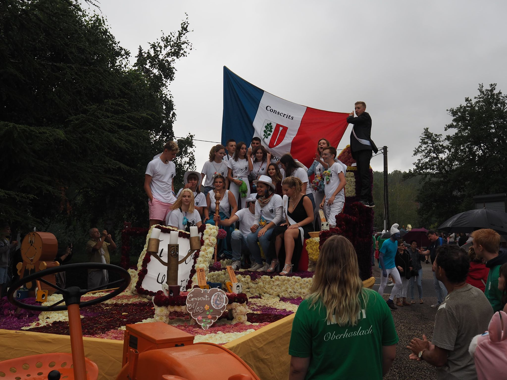
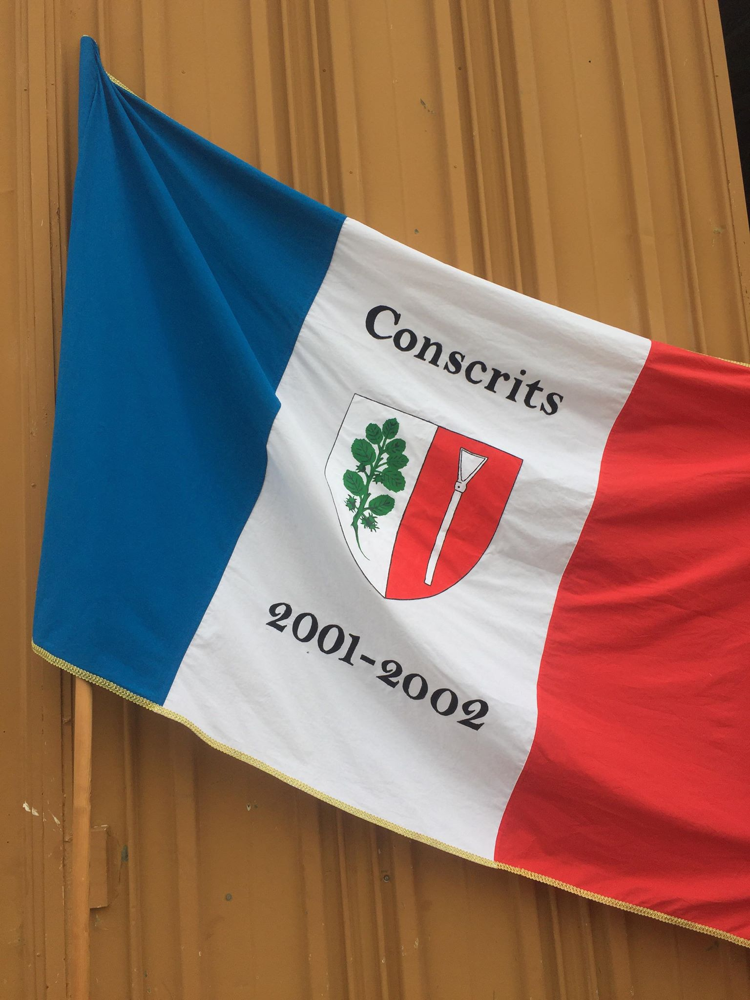
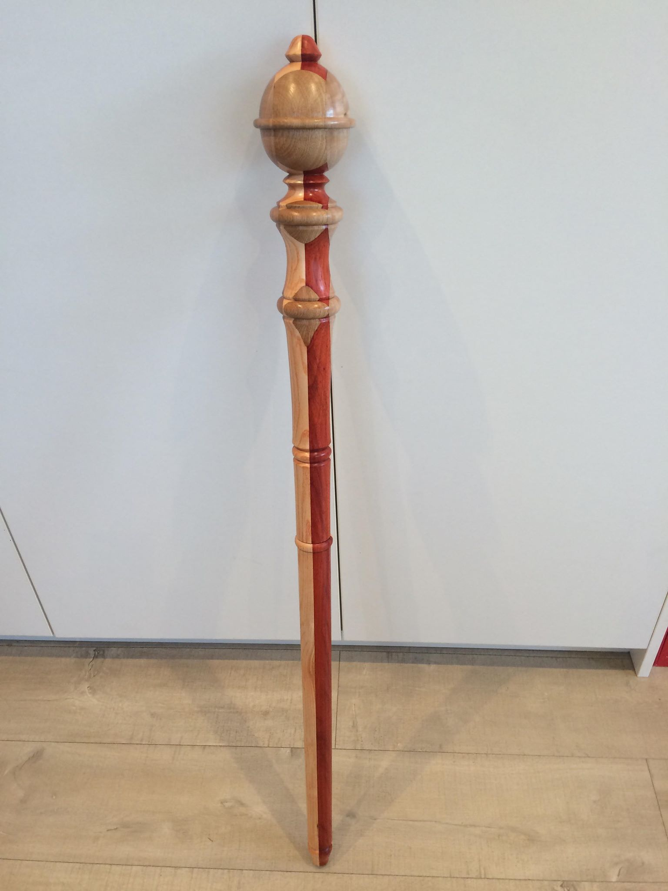

Les conscrits sont les personne entre 16 et 18 ans qui peuvent choisir de faire des manifestations pour tenter de gagner de l'argent et partir une semaine a Majorque avec l'argent récolté. Etre conscrit nécessite de suivre de nombreuses traditions qui restent de générations en génération comme pour servir les vétérans du village lors d'un repas en décembre ou bien d'être présent a chaque homages du 11 novembres ou du 8 mai.

Le drapeau et le sceptre à faire nous même et qui est primordiale pour avoir le droit de défiler et d'etre présent lors des manifestations

